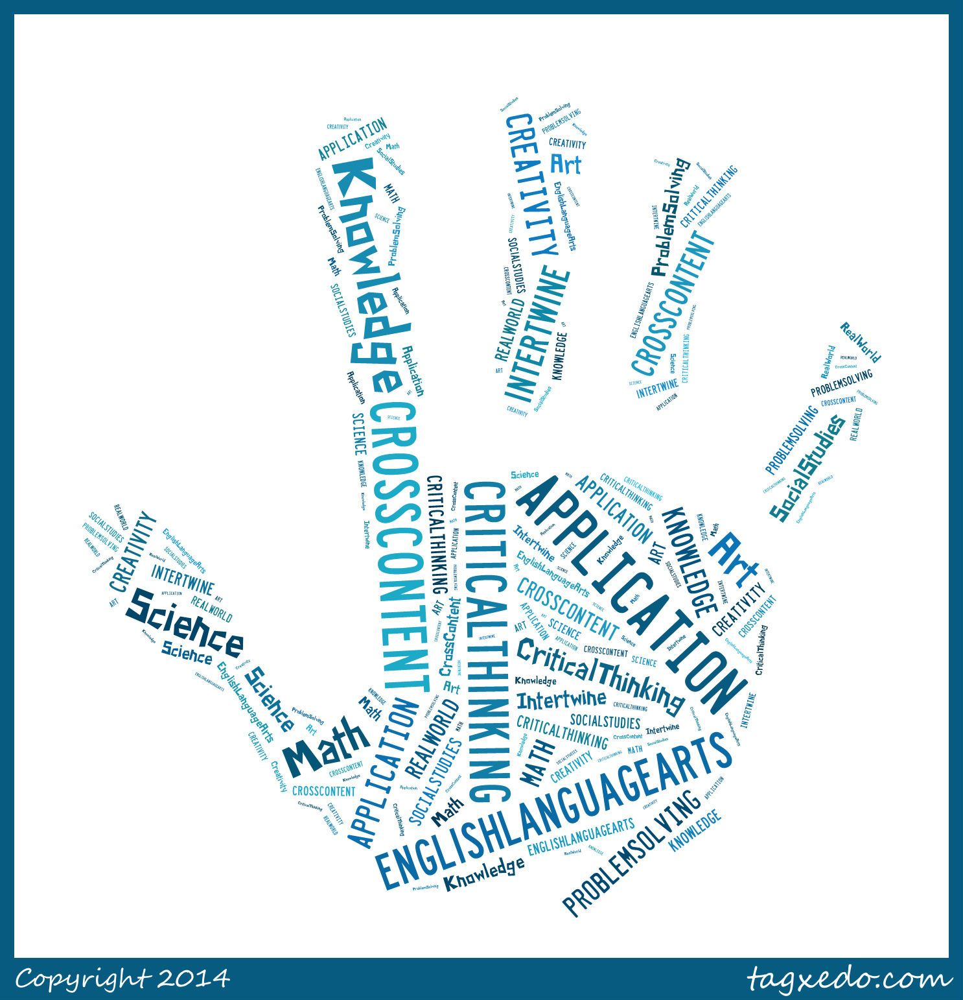
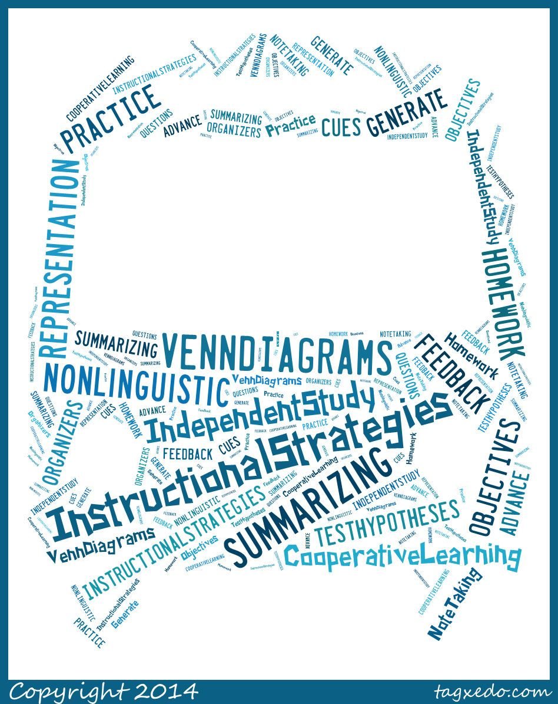
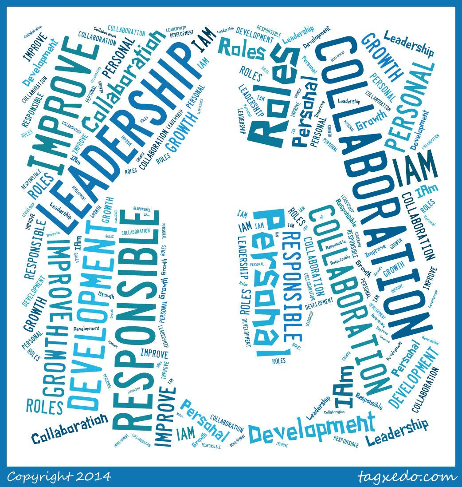
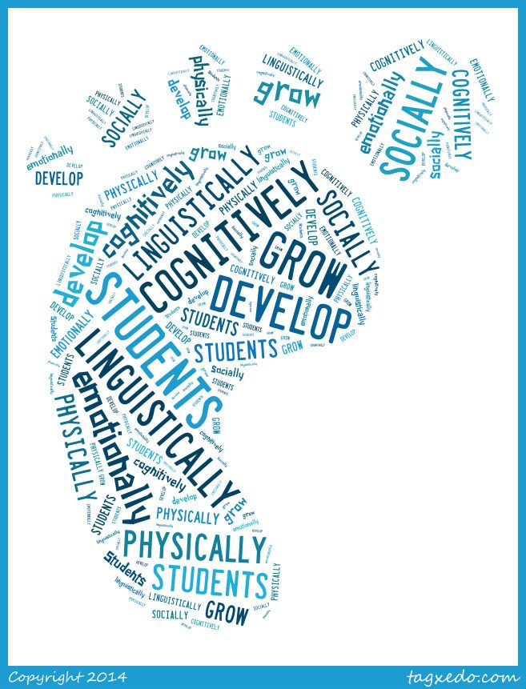

InTASC Standards
- Title : Reflective Portfolio Project
- Class: TED-2021
- Project date: 07 December 2020
Reflections
InTASC Standard #1
Standard #1 in the Learner and Learning category talks about Learner Development. Learner development states that a teacher understands how learners grow and develop, while also recognizing that the patterns of learning and development vary from individual to individual. Many factors have to do with a learner's learning development, such as, cognitive, linguistic, social, emotional, and physical. At my job, in the beginning of the year, we did a project to learn more about each student and showcase how we are all different and have different likes and dislikes. That each student is their own individual person, and we address them as such and find ways to help them indivudally. I have, also, seen during my classroom observations that my placement teacher, does well at recognizing the individual in her students. She does a lot of extra tutoring and one-on-one practice with her students that need it. She is very devoted to her classroom, and was a great placement teacher to have. As a teacher I will take this knowledge with me in the workforce by teaching each student individually and to know that each student acts, thinks, and learns differently than the other. I can also make sure to look over lesson plans and ensure that each student I have come to understand and know, will understand the lesson and grasp what I am teaching. This is helpful for all grade levels.
InTASC Standard #5
Standard #5- Application of Content-in the Content Knowledge category talks about how the teacher should engage students by connecting concepts and using different perspectives to result in ctitical thinking, creativity, and collaborative problem solving.This connects with how students are taking what they are learning in the classroom and connecting it with real-world scenarios. In my placement, I saw how my mentor teacher was able to connect her students into a math word problems containing slope, by talking about real-world situations thas students could understand and take out of the classroom to further connect with. In my job, we also have a Project- Based Learning project that each class has to do and it works in a way for students to have a purpose for everything they are learning. In my own classroom, I think that this standard would be extremely important. A way I can enforce this standard is by trying to use some Project-Based Learning techniques as well. This includes asking many questions throughout the lesson and when students ask questions, try to answer them with another question to get them thinking and hopefully they are able to answer their original questions themselves. My mentor teacher also would ask her students many questions and try to see the different answers students would get and see if the students could feed off one another in the classroom to obtain the knowledge.
InTASC Standard #8
Standard #8 in the Instructional Practice category talks about Instructional Strategies. The teacher will use multiple different instructional strategies to assure that the students have a deep understanding of the content and their connections to the content, so the student can take this knowledge and apply it to real-life situations. At my current position, I work one on one with students in breakout rooms during instructional time. When, I am working on the classwork with the student and I can tell that the student is having difficulties understanding the material and completing the work, I switch it up. I will find a way to change what I am saying to see if the student can understand it better that way. Or I use other instructional resources such as a video or an interactive game to try to get my student to grasp the knowledge and move forward in the lesson. Also, another way at my job that we make sure to give many different ways of learning is by creating lessons that have many different types of learning in them. For example, we use click and drag objects, visual learning, and also words/numbers for students to understand. In my own classroom, I want to make sure that I have many different options in my lessons, so that I can have a backup if students are having a hard time understanding and also so if during the assessment part of my lesson, I notice that students are all not getting it. I can go back and reteach the lesson in a different perspective, so the students have another way of looking at the material.
InTASC Standard #10
Standard #10- Leadership and Collaboration-in the Professional Responsibility category talks about how teachers can network and become better learners and teachers themselves. Teachers take responsiblitity for collaborating with students, families, other teachers and professionals to ensure learner growth and to continue to become a better teacher. In my job, every Friday we have a team primacy, where we sit down together as a team and often our supervisors come in and we find ways together on how to become better teachers for our students. We fill out a form that we go over the next week to see what improvements we have made, and what improvements we still need to make the following weeks. I also attend a weekly training from my job as well, to continue to learn and open up my mind to new ways to be a better listener for my students and a better teacher for them as well. With these days in my schedule, I know I am continuing to better my education and advance my profession. In my future classroom, I plan to practice these same things. I plan to learn from my students and let them teach me somedays, because they have knowledge to give too. Also, I want to continue to go to classes, and stay on top of my education so that I can always teach my students the newest, and most effective knowledge so that they can be their best selves.